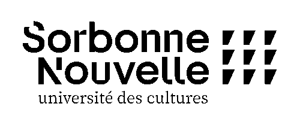

Emily Kartotaroeno
Licence 3 des Sciences du Langage


Mon CV des trois dernières années :
| année universitaire | Statut |
|---|
| 2024-2025 | Licence 3 des Sciences du Langage |
| 2023-2024 | Khâgne lettres & Sciences humaines |
| 2022-2023 | Hypokhâgne lettres & Sciences humaines |
Voici les cinq derniers livres que j'ai lu :
- Atomic Habits, James Clear, Avery
- On Earth We're Briefly Gorgeous, Ocean Vuong, Penguin Books
- Littoral, Wajdi Mouawad, Babel
- La Fortune des Rougon, Emile Zola, Atramenta
- If On A Winter's Night A Traveler, Italo Calvino, Harcourt Brace International